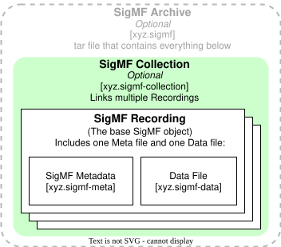

SigMF specifies a way to describe sets of recorded digital signal samples with metadata written in JSON. SigMF can be used to describe general information about a collection of samples, the characteristics of the system that generated the samples, features of signals themselves, and the relationship between different recordings.
This document is available under the CC-BY-SA License. Copyright of contributions to SigMF are retained by their original authors. All contributions under these terms are welcome.
Sharing sets of recorded signal data is an important part of science and engineering. It enables multiple parties to collaborate, is often a necessary part of reproducing scientific results (a requirement of scientific rigor), and enables sharing data with those who do not have direct access to the equipment required to capture it.
Unfortunately, these datasets have historically not been very portable, and there is not an agreed upon method of sharing metadata descriptions of the recorded data itself. This is the problem that SigMF solves.
By providing a standard way to describe data recordings, SigMF facilitates the sharing of data, prevents the "bitrot" of datasets wherein details of the capture are lost over time, and makes it possible for different tools to operate on the same dataset, thus enabling data portability between tools and workflows.
The key words “MUST”, “MUST NOT”, “REQUIRED”, “SHALL”, “SHALL NOT”, “SHOULD”, “SHOULD NOT”, “RECOMMENDED”, “MAY”, and “OPTIONAL” in this document are to be interpreted as described in RFC 2119.
JSON keywords are used as defined in ECMA-404.
Augmented Backus-Naur form (ABNF) is used as defined by RFC 5234 and updated by RFC 7405.
Fields defined as "human-readable", a "string", or simply as "text" SHALL be treated as plaintext where whitespace is significant, unless otherwise specified. Fields defined "human/machine-readable" SHOULD be short, simple text strings without whitespace that are easily understood by a human and readily parsed by software.
Specific keywords with semantic meaning in the context of this specification are capitalized after being introduced (e.g., Recording).
The SigMF specification fundamentally describes two types of
information: datasets, and metadata associated with those datasets.
Taken together, a Dataset with its SigMF metadata is a SigMF Recording.
Datasets, for purposes of this specification, are sets of digital
measurements generically called samples in
this document. The samples can represent any time-varying source of
information. They MAY, for example, be digital samples created by
digital synthesis or by an Analog-to-Digital Converter. They could also
be geolocation coordinates from a GNSS receiver, temperature readings
from a thermal sensor, or any other stored digital measurement
information.
Metadata describes the Dataset with which it is associated. The metadata includes information meant for the human users of the Dataset, such as a title and description, and information meant for computer applications (tools) that operate on the Dataset.
This specification defines a schema for metadata using a core namespace
that is a reserved name and can only be defined by this specification.
Other metadata MAY be described by extension namespaces. This
specification also defines a model and format for how SigMF data should
be stored at-rest (on-disk) using JSON.
There are two fundamental filetypes defined by this specification:
files with metadata, and the files that contain the Datasets described
by the metadata. There are two types of files containing metadata, a
SigMF Metadata file,
and a SigMF Collection
file. There are also two types of Datasets, a SigMF Dataset file,
and a Non-Conforming Dataset
file, abbreviated as NCD. NCDs are
a mechanism to support using valid SigMF metadata to describe data that
is not valid SigMF and formatted according to SigMF Dataset
requirements.
The primary unit of SigMF is a SigMF Recording,
which comprises a Metadata file and the Dataset file it describes.
Collections are an optional feature that are used to describe the
relationships between multiple Recordings.
Collections and multiple Recordings can be packaged for easy storage
and distribution in a SigMF Archive.

Rules for all files:
All filetypes MUST be stored in separate files on-disk.
It is RECOMMENDED that filenames use hyphens to separate words rather than whitespace or underscores.
Rules for SigMF Metadata files:
A Metadata file MUST only describe one Dataset file.
A Metadata file MUST be stored in UTF-8 encoding.
A Metadata file MUST have a .sigmf-meta
filename extension.
A Metadata file MUST be in the same directory as the Dataset file it describes.
It is RECOMMENDED that the base filenames (not including file extension) of a Recording’s Metadata and Dataset files be identical.
Rules for SigMF Dataset files:
The Dataset file MUST have a .sigmf-data
filename extension.
Rules for SigMF Non-Conforming Dataset files:
The NCD file MUST NOT have a .sigmf-data
filename extension.
Rules for SigMF Collection files:
The Collection file MUST be stored in UTF-8 encoding.
The Collection file MUST have a .sigmf-collection
filename extension.
The sigmf-collection
file MUST be either in the same directory as the Recordings that it
references, or in the top-level directory of an Archive (described in
later section).
Rules for SigMF Archive files:
The Archive MUST use the tar archive
format, as specified by POSIX.1-2001.
The Archive file’s filename extension MUST be .sigmf.
The Archive MUST contain at least one SigMF Recording.
The Archive MAY contain one .sigmf-collection
file in the top-level directory.
SigMF Archives MAY contain additional files (not specified by SigMF), and arbitrary directory structures, but the SigMF files within the Archive MUST adhere to all rules above when the archive is extracted.
There are four orthogonal characteristics of sample data: complex or real, floating-point or integer, bit-width, and endianness. The following ABNF rules specify the Dataset formats defined in the Core namespace. Additional Dataset formats MAY be added through extensions.
dataset-format = (real / complex) ((type endianness) / byte)
real = "r"
complex = "c"
type = floating-point / signed-integer / unsigned-integer
floating-point = "f32" / "f64"
signed-integer = "i32" / "i16"
unsigned-integer = "u32" / "u16"
endianness = little-endian / big-endian
little-endian = "\_le"
big-endian = "\_be"
byte = "i8" / "u8"So, for example, the string "cf32_le"
specifies "complex 32-bit floating-point samples stored in
little-endian", the string "ru16_be"
specifies "real unsigned 16-bit samples stored in big-endian", and the
string "cu8"
specifies "complex unsigned byte".
Only IEEE-754 single-precision and double-precision floating-point types are supported by the SigMF Core namespace. Note that complex data types are specified by the bit width of the individual I/Q components, and not by the total complex pair bitwidth (like Numpy).
The samples SHOULD be written to the Dataset file without separation, and the Dataset file MUST NOT contain any other characters (e.g., delimiters, whitespace, line-endings, EOF characters).
Complex samples MUST be interleaved, with the in-phase component
first (i.e., I[0] Q[0] I[1] Q[1] ... I[n] Q[n]).
When core:num_channels
in the Global Object (described below) indicates that the Recording
contains more than one channel, samples from those channels MUST be
interleaved in the same manner with the same index from each channel’s
sample serially in the Recording. This is intended for use in situations
where the native SigMF datatypes are not appropriate, such as audio or
oscilloscope channels. For best compatibility, is RECOMMENDED that
native complex type datatypes be used whenever possible (e.g.: RF data).
The data type specified by core:data_type applies to all channels of
data. For multiple channels of IQ data (e.g., array processing), it is
RECOMMENDED to use SigMF Collections.
SigMF metadata fundamentally takes the form of key/value pairs: "namespace:name": value,
Metadata field names in the top level global Object,
captures
segment Objects, or annotations
Objects MUST be of this form. All fields other than those at the top
level which contain a : delimiter
SHALL only use letters, numbers, and the _ character;
all other characters are forbidden. Field names MUST NOT start with a
number and MUST NOT not be C++20 or Python 3.10 keywords.
When stored on-disk (at-rest), these rules apply:
The Metadata file MUST be written in JSON, as specified by ECMA-404.
The entire contents of the Metadata file MUST be contained within a single top-level JSON Object.
The top-level Object MUST contain three JSON Objects named global, captures, and
annotations.
Metadata key/value pairs SHALL NOT be assumed to have carried over between capture or annotation segments. If a name/value pair applies to a particular segment, then it MUST appear in that segment, even if the value is unchanged relative to the previous segment.
All SigMF metadata is defined using the structural concepts of JSON, and when stored on-disk, metadata MUST be proper JSON to be SigMF compliant.
The values in each key/value pair MUST be one of the following datatypes.
| Type | Long-form Name | Description |
|---|---|---|
| int | integer | Signed 64-bit integer. |
| uint | unsigned long | Unsigned 64-bit integer. |
| double | double-precision floating-point | A 64-bit float as defined by IEEE 754. |
| string | string | A string of characters, as defined by the JSON standard. |
| boolean | boolean | Either true or false, as
defined by the JSON standard. |
| null | null | null, as
defined by the JSON standard. |
| array | JSON array | An array of other
values, as defined by the JSON standard. |
| object | JSON object | An object of
other values, as defined by the JSON standard. |
| GeoJSON | GeoJSON point Object | A single GeoJSON point Object
as defined by RFC 7946. |
Namespaces provide a way to further classify key/value pairs in
metadata. This specification defines the core
namespace. Only this specification can add fields to the Core
namespace.
The goal of the Core namespace is to capture the foundational metadata necessary to work with SigMF data. Some keys within the Core namespace are OPTIONAL, and others are REQUIRED. The REQUIRED fields are those that are minimally necessary to parse and process the Dataset, or that have obvious defaults that are valid. All other fields are OPTIONAL, though they can be strongly RECOMMENDED.
Fields not defined in the Core namespace MAY be defined in extension
namespaces. The SigMF specification defines some extension namespaces to
provide canonical definitions for commonly needed metadata fields that
do not belong in Core. These canonical extension namespaces can be found
in the extensions/
directory of the official SigMF repository. Other extension namespaces
MAY be defined by the user as needed.
An extension namespace MUST be defined in a single file, named
meta-syntactically as N.sigmf-ext.md,
where N
is the name of the extension.
A N.sigmf-ext.md
file MUST be a Github-Flavored Markdown file stored in UTF-8
encoding.
Extensions MUST have version numbers. It is RECOMMENDED that extensions use Semantic Versioning.
An extension namespace MAY define new top-level SigMF Objects, key/value pairs, new files, new Dataset formats, or new datatypes.
New key/value pairs defined by an extension namespace MUST be
defined in the context of a specific SigMF top-level Object - i.e.,
global,
captures,
annotations,
or a new user-defined Object.
It is RECOMMENDED that an extension namespace file follow the structure of the canonical extension namespaces.
The global object
consists of key/value pairs that provide information applicable to the
entire Dataset. It contains the information that is minimally necessary
to open and parse the Dataset file, as well as general information about
the Recording itself.
| Field | Required | Type | Short Description |
|---|---|---|---|
| datatype | Required | string | The SigMF Dataset format of the stored samples in the Dataset file |
| sample_rate | number | The sample rate of the signal in samples per second | |
| author | string | A text identifier for the author potentially including name, handle, email, and/or other ID like Amateur Call Sig | |
| collection | string | The base filename of a ‘collection‘ with which this Recording is associated | |
| dataset | string | The full filename of the Dataset file this Metadata file describes, used ONLY with Non-Conforming Datasets | |
| data_doi | string | The registered DOI (ISO 26324) for a Recording’s Dataset file | |
| description | string | A text description of the SigMF Recording | |
| hw | string | A text description of the hardware used to make the Recording | |
| license | string | A URL for the license document under which the Recording is offered | |
| metadata_only | boolean | Indicates the Metadata file is intentionally distributed without the Dataset | |
| meta_doi | string | The registered DOI (ISO 26324) for a Recording’s Metadata file | |
| num_channels | integer | Number of interleaved channels in the Dataset file, if omitted this is implied to be 1, for multiple channels of IQ data, it is RECOMMENDED to use SigMF Collections instead of num_channels for widest application support | |
| offset | integer | The index number of the first sample in the Dataset | |
| recorder | string | The name of the software used to make this SigMF Recording | |
| sha512 | string | The SHA512 hash of the Dataset file associated with the SigMF file | |
| trailing_bytes | integer | The number of bytes to ignore at the end of a Dataset, used ONLY with Non-Conforming Datasets | |
| version | Required | string | The version of the SigMF specification used to create the Metadata file, in the format X.Y.Z |
| geolocation | object | The location of the Recording system (note, using the Captures scope ‘geolocation‘ field is preferred) | |
| extensions | array | The ‘core:extensions‘ field in the Global Object is an array of extension objects that describe SigMF extensions |
The SigMF Dataset format of the stored samples in the Dataset file. examples : [’cf32_le’, ’ri16_le’] default : cf32_le type : string
The sample rate of the signal in samples per second. exclusiveMinimum : 0 maximum : 1000000000000 type : number
A text identifier for the author potentially including name, handle, email, and/or other ID like Amateur Call Sign examples : [’Bruce Wayne bruce@waynetech.com’, ’Bruce (K3X)’] type : string
The base filename of a collection
with which this Recording is associated. This field is used to indicate
that this Recording is part of a SigMF Collection (described later in
this document). It is strongly RECOMMENDED that if you are building a
Collection, that each Recording referenced by that Collection use this
field to associate up to the relevant sigmf-collection
file. type : string
The full filename of the Dataset file this Metadata file describes,
used ONLY with Non-Conforming Datasets. If provided, this string MUST be
the complete filename of the Dataset file, including the extension. The
Dataset file must be in the same directory as the .sigmf-meta file; note
that this string only includes the filename, not directory. If a
Recording does not have this field, it MUST have a compliant SigMF
Dataset (NOT a Non-Conforming Dataset) which MUST use the same base
filename as the Metadata file and use the .sigmf-data
extension. If a SigMF Recording or Archive is renamed this field MUST
also be updated, because of this it is RECOMMENDED that Compliant SigMF
Recordings avoid use of this field. This field SHOULD NOT be used in
conjunction the core:metadata_only
field. If both fields exist and the file specified by core:dataset
exists, then core:metadata_only
SHOULD be ignored by the application. type : string
The registered DOI (ISO 26324) for a Recording’s Dataset file. type : string
A text description of the SigMF Recording. type : string
A text description of the hardware used to make the Recording. type : string
A URL for the license document under which the Recording is offered. (RFC 3986) examples : [’https://creativecommons.org/licenses/by-sa/4.0/’] format : uri type : string
Indicates the Metadata file is intentionally distributed without the
Dataset. This field should be defined and set to true to
indicate that the Metadata file is being distributed without a
corresponding .sigmf-data
file. This may be done when the Dataset will be generated dynamically
from information in the schema, or because just the schema is sufficient
for the intended application. A metadata only distribution is not a
SigMF Recording. If a Compliant SigMF Recording uses this field, it MAY
indicate that the Dataset was dynamically generated from the metadata.
This field MAY NOT be used in conjunction with Non-Conforming Datasets
or the core:dataset
field. type : boolean
The registered DOI (ISO 26324) for a Recording’s Metadata file. type : string
Number of interleaved channels in the Dataset file, if omitted this is implied to be 1, for multiple channels of IQ data, it is RECOMMENDED to use SigMF Collections instead of num_channels for widest application support. default : 1 minimum : 1 maximum : 9223372036854775807 type : integer
The index number of the first sample in the Dataset. If not provided, this value defaults to zero. Typically used when a Recording is split over multiple files. All sample indices in SigMF are absolute, and so all other indices referenced in metadata for this recording SHOULD be greater than or equal to this value. default : 0 minimum : 0 !comment : The maximum value for this property is equal to 2^63 - 1, making it easy to fit into a signed 64-bit integer. maximum : 9223372036854775807 type : integer
The name of the software used to make this SigMF Recording. type : string
The SHA512 hash of the Dataset file associated with the SigMF file. type : string
The number of bytes to ignore at the end of a Dataset, used ONLY with Non-Conforming Datasets. This field is used with Non-Conforming Datasets to indicate some number of bytes that trail the sample data in the NCD file that should be ignored for processing. This can be used to ignore footer data in non-SigMF filetypes. type : integer minimum : 0 maximum : 9223372036854775807
The version of the SigMF specification used to create the Metadata file, in the format X.Y.Z. type : string
The location of the Recording system (note, using the Captures scope
geolocation
field is preferred). See the geolocation
field within the Captures metadata for details. While using the Captures
scope geolocation is
preferred, fixed recording systems may still provide position
information within the Global object so it is RECOMMENDED that
applications check and use this field if the Captures geolocation
field is not present. type : object
required : [’type’,
’coordinates’] properties : {’type’:
{’type’: ’string’, ’enum’: [’Point’]},
’coordinates’: {’type’: ’array’, ’minItems’: 2, ’maxItems’: 3, ’items’:
{’type’: ’number’}}, ’bbox’: {’type’: ’array’, ’minItems’: 4, ’items’:
{’type’: ’number’}}}
The core:extensions
field in the Global Object is an array of extension objects that
describe SigMF extensions. Extension Objects MUST contain the three
key/value pairs defined below, and MUST NOT contain any other
fields.
| Name | Required | Type | Description |
|---|---|---|---|
| name | true | string | The name of the SigMF extension namespace. |
| version | true | string | The version of the extension namespace specification used. |
| optional | true | boolean | If this field is false, then
the application MUST support this extension in order to parse the
Recording; if the application does not support this extension, it SHOULD
report an error. |
In the example below, extension-01
is optional, so the application may ignore it if it does not support
extension-01.
But extension-02
is not optional, so the application must support extension-02
in order to parse the Recording.
"global": {
...
"core:extensions" : [
{
"name": "extension-01",
"version": "0.0.5",
"optional": true
},
{
"name": "extension-02",
"version": "1.2.3",
"optional": false
}
]
...
}type : array default : []
The captures
Object is an array of capture segment objects that describe the
parameters of the signal capture. It MUST be sorted by the value of each
capture segment’s core:sample_start
key, ascending. Capture Segment Objects are composed of key/value pairs,
and each Segment describes a chunk of samples that can be mapped into
memory for processing. Each Segment MUST contain a core:sample_start
key/value pair, which indicates the sample index relative to the Dataset
where this Segment’s metadata applies. The fields that are described
within a Capture Segment are scoped to that Segment only and need to be
explicitly declared again if they are valid in subsequent Segments.
While it is recommended there be at least one segment defined, if there
are no items in the captures array it is implied that a single capture
exists with core:sample_start
equal to zero (no other metadata is implied), i.e., "captures": []
implies "captures": ["core:sample_start": 0].
| Field | Required | Type | Short Description |
|---|---|---|---|
| sample_start | Required | integer | Index of first sample of this chunk |
| datetime | string | An ISO-8601 string indicating the timestamp of the sample index specified by sample_start | |
| frequency | number | The center frequency of the signal in Hz | |
| global_index | integer | The index of the sample referenced by ‘sample_start‘ relative to an original sample stream | |
| header_bytes | integer | The number of bytes preceding a chunk of samples that are not sample data, used for NCDs | |
| geolocation | object | The location of the recording system at the start of this Captures segment, as a single RFC 7946 GeoJSON ‘point‘ Object |
Index of first sample of this chunk. This field specifies the sample index where this Segment takes effect relative to the recorded Dataset file. If the Dataset is a SigMF Dataset file, this field can be immediately mapped to physical disk location since conforming Datasets only contain sample data. default : 0 minimum : 0 maximum : 9223372036854775807 type : integer
An ISO-8601 string indicating the timestamp of the sample index
specified by sample_start. This key/value pair MUST be an ISO-8601
string, as defined by [RFC 3339](https://www.ietf.org/rfc/rfc3339.txt),
where the only allowed time-offset is
Z,
indicating the UTC/Zulu timezone. The ABNF description is:
date-fullyear = 4DIGIT
date-month = 2DIGIT ; 01-12
date-mday = 2DIGIT ; 01-28, 01-29, 01-30, 01-31 based on month/year
time-hour = 2DIGIT ; 00-23
time-minute = 2DIGIT ; 00-59
time-second = 2DIGIT ; 00-58, 00-59, 00-60 based on leap second rules
time-secfrac = "." 1*DIGIT
time-offset = "Z"
partial-time = time-hour ":" time-minute ":" time-second [time-secfrac]
full-date = date-fullyear "-" date-month "-" date-mday
full-time = partial-time time-offset
date-time = full-date "T" full-time Thus, timestamps take the form of YYYY-MM-DDTHH:MM:SS.SSSZ,
where any number of digits for fractional seconds is permitted.
examples :
[’1955-11-05T14:00:00.000Z’]
type : string
The center frequency of the signal in Hz. type : number minimum : -1000000000000 maximum : 1000000000000 examples : [915000000, 2400000000]
The index of the sample referenced by sample_start
relative to an original sample stream. The entirety of which may not
have been captured in a recorded Dataset. If omitted, this value SHOULD
be treated as equal to sample_start.
For example, some hardware devices are capable of ’counting’ samples at
the point of data conversion. This sample count is commonly used to
indicate a discontinuity in the datastream between the hardware device
and processing. For example, in the below Captures array, there are two
Segments describing samples in a SigMF Dataset file. The first Segment
begins at the start of the Dataset file. The second segment begins at
sample index 500 relative to the recorded samples (and since this is a
conforming SigMF Dataset, is physically located on-disk at location
sample_start * sizeof(sample)),
but the global_index
reports this was actually sample number 1000 in the original datastream,
indicating that 500 samples were lost before they could be recorded.
...
"captures": [
{
"core:sample\_start": 0,
"core:global\_index": 0
},
{
"core:sample\_start": 500,
"core:global\_index": 1000
}
],
... type : integer minimum : 0 maximum : 9223372036854775807
The number of bytes preceding a chunk of samples that are not sample
data, used for NCDs. This field specifies a number of bytes that are not
valid sample data that are physically located at the start of where the
chunk of samples referenced by this Segment would otherwise begin. If
omitted, this value SHOULD be treated as equal zero. If included, the
Dataset is by definition a Non-Conforming Dataset. For example, the
below Metadata for a Non-Conforming Dataset contains two segments
describing chunks of 8-bit complex samples (2 bytes per sample) recorded
to disk with 4-byte headers that are not valid for processing. Thus, to
map these two chunks of samples into memory, a reader application would
map the 500 samples
(equal to 1000 bytes) in
the first Segment, starting at a file offset of 4 bytes, and
then the remainder of the file through EOF starting at a file offset of
1008 bytes
(equal to the size of the previous Segment of samples plus two
headers).
{
"global": {
"core:datatype": "cu8",
"core:version": "1.2.0",
"core:dataset": "non-conforming-dataset-01.dat"
},
"captures": [
{
"core:sample\_start": 0,
"core:header\_bytes": 4,
},
{
"core:sample\_start": 500,
"core:header\_bytes": 4,
}
],
"annotations": []
} type : integer minimum : 0 maximum : 9223372036854775807
The location of the recording system at the start of this Captures
segment, as a single RFC 7946 GeoJSON point Object.
For moving emitters, this provides a rudimentary means to manage
location through different captures segments. While core:geolocation
is also allowed in the Global object for backwards compatibility
reasons, adding it to Captures is preferred. Per the GeoJSON
specification, the point coordinates use the WGS84 coordinate reference
system and are longitude,
latitude
(REQUIRED, in decimal degrees), and altitude
(OPTIONAL, in meters above the WGS84 ellipsoid) - in that order. An
example including the altitude field is shown below:
"captures": {
...
"core:geolocation": {
"type": "Point",
"coordinates": [-107.6183682, 34.0787916, 2120.0]
}
...
} GeoJSON permits the use of *Foreign Members* in GeoJSON documents per
RFC 7946 Section 6.1. Because the SigMF requirement for the geolocation
field is to be a valid GeoJSON point Object,
users MAY include *Foreign Member* fields here for user-defined purposes
(position valid indication, GNSS SV counts, dillution of precision,
accuracy, etc). It is strongly RECOMMENDED that all fields be documented
in a SigMF Extension document. *Note:* Objects named geometry or
properties are
prohibited Foreign Members as specified in RFC 7946 Section 7.1.
type : object required :
[’type’, ’coordinates’]
properties : {’type’: {’type’: ’string’, ’enum’:
[’Point’]}, ’coordinates’: {’type’: ’array’,
’minItems’: 2, ’maxItems’: 3, ’items’: {’type’: ’number’}}, ’bbox’:
{’type’: ’array’, ’minItems’: 4, ’items’: {’type’: ’number’}}}
The annotations
Object is an array of annotation segment objects that describe anything
regarding the signal data not part of the Captures and Global objects.
It MUST be sorted by the value of each Annotation Segment’s core:sample_start
key, ascending. Annotation segment Objects contain key/value pairs and
MUST contain a core:sample_start
key/value pair, which indicates the first index at which the rest of the
Segment’s key/value pairs apply. There is no limit to the number of
annotations that can apply to the same group of samples. If two
annotations have the same sample_start,
there is no defined ordering between them. If sample_count
is not provided, it SHOULD be assumed that the annotation applies from
sample_start
through the end of the corresponding capture, in all other cases sample_count
MUST be provided.
| Field | Required | Type | Short Description |
|---|---|---|---|
| sample_start | Required | integer | The sample index at which this Segment takes effect |
| sample_count | integer | The number of samples that this Segment applies to | |
| freq_lower_edge | number | The frequency (Hz) of the lower edge of the feature described by this annotation | |
| freq_upper_edge | number | The frequency (Hz) of the upper edge of the feature described by this annotation | |
| label | string | A short form human/machine-readable label for the annotation | |
| comment | string | A human-readable comment, intended to be used for longer comments (it is recommended to use ‘label‘ for shorter text) | |
| generator | string | Human-readable name of the entity that created this annotation | |
| uuid | string | RFC-4122 unique identifier |
The sample index at which this Segment takes effect. default : 0 minimum : 0 maximum : 9223372036854775807 type : integer
The number of samples that this Segment applies to. type : integer minimum : 0 maximum : 9223372036854775807
The frequency (Hz) of the lower edge of the feature described by this
annotation. The freq_lower_edge
and freq_upper_edge
fields SHOULD be at RF if the feature is at a known RF frequency. If
there is no known center frequency (as defined by the frequency
field in the relevant Capture Segment Object), or the center frequency
is at baseband, the freq_lower_edge
and freq_upper_edge
fields SHOULD be relative to baseband. It is REQUIRED that both freq_lower_edge
and freq_upper_edge
be provided, or neither; the use of just one field is not allowed.
type : number minimum :
-1000000000000 maximum : 1000000000000
The frequency (Hz) of the upper edge of the feature described by this annotation. type : number minimum : -1000000000000 maximum : 1000000000000
A short form human/machine-readable label for the annotation. The
label
field MAY be used for any purpose, but it is RECOMMENDED that it be
limited to no more than 20 characters as a common use is a short form
GUI indicator. Similarly, it is RECOMMENDED that any user interface
making use of this field be capable of displaying up to 20 characters.
type : string
A human-readable comment, intended to be used for longer comments (it
is recommended to use label for
shorter text). type : string
Human-readable name of the entity that created this annotation. type : string
RFC-4122 unique identifier. format : uuid type : string
The sigmf-collection
file contains metadata in a single top-level Object called a collection.
The Collection Object contains key/value pairs that describe
relationships between SigMF Recordings.
The Collection Object associates SigMF Recordings together by specifying
SigMF Recording Objects
in the core:streams
JSON array. Each Object describes a specific associated SigMF
Recording.
The following rules apply to SigMF Collections:
1. The Collection Object MUST be the only top-level Object in the file.
2. Keys in the Collection Object SHOULD use SigMF Recording Objects when referencing SigMF Recordings.
3. SigMF Recording Objects MUST contain both a name field,
which is the base-name of a SigMF Recording, and a hash which is
the SHA512 hash of the Recording Metadata file [base-name].sigmf-meta.
4. SigMF Recording Objects MUST appear in a JSON array.
Example top-level.sigmf-collection
file:
{
"collection": {
"core:version": "1.2.0",
"core:extensions" : [
{
"name": "antenna",
"version": "1.0.0",
"optional": true
}
],
"antenna:hagl": 120,
"antenna:azimuth\_angle": 98,
"core:streams": [
{
"name": "example-channel-0-basename",
"hash": "b4071db26f5c7b0c70f5066eb9bc3a8b506df0f5af09991ba481f63f97f7f48e9396584bc1c296650cd3d47bc4ad2c5b72d2561078fb6eb16151d2898c9f84c4"
},
{
"name": "example-channel-1-basename",
"hash": "7132aa240e4d8505471cded716073141ae190f763bfca3c27edd8484348d6693d0e8d3427d0bf1990e687a6a40242d514e5d1995642bc39384e9a37a211655d7"
}
]
}
}| Field | Required | Type | Short Description |
|---|---|---|---|
| version | Required | string | The version of the SigMF specification used to create the Collection file |
| description | string | A text description of the SigMF Collection | |
| author | string | A text identifier for the author potentially including name, handle, email, and/or other ID like Amateur Call Sign | |
| collection_doi | string | The registered DOI (ISO 26324) for a Collection | |
| license | string | A URL for the license document under which this Collection metadata is offered | |
| extensions | array | The ‘core:extensions‘ field in the Global Object is an array of extension objects that describe SigMF extensions | |
| streams | array | An ordered array of SigMF Recording Tuples, indicating multiple recorded streams of data (e.g., channels from a phased array) |
The version of the SigMF specification used to create the Collection file. examples : [’1.2.0’] type : string
A text description of the SigMF Collection. default : type : string
A text identifier for the author potentially including name, handle, email, and/or other ID like Amateur Call Sign. default : examples : [’Bruce Wayne bruce@waynetech.com’, ’Bruce (K3X)’] type : string
The registered DOI (ISO 26324) for a Collection. default : type : string
A URL for the license document under which this Collection metadata is offered. default : examples : [’https://creativecommons.org/licenses/by-sa/4.0/’] type : string
The core:extensions
field in the Global Object is an array of extension objects that
describe SigMF extensions. Extension Objects MUST contain the three
key/value pairs defined in Table (FIX REF), and MUST NOT contain any
other fields. default : []
type : array
An ordered array of SigMF Recording Tuples, indicating multiple recorded streams of data (e.g., channels from a phased array). default : [] type : array
SigMF Recording Objects
reference the base-name of the SigMF Recording and the SHA512 hash of
the Metadata file, and SHOULD BE specified as a JSON Object:
{
"name": "example-channel-0-basename",
"hash": "b4071db26f5c7b0c70f5066eb9..."
}Recording Tuples are also permitted and have a similar form. The
order of the tuple: [name, hash] is
REQUIRED when using tuples:
["example-channel-0-basename", "b4071db26f5c7b0c70f5066e..."]Tuples will be removed in SigMF version 2.0, so JSON Objects are
RECOMMENDED. Additional optional user fields MAY be added to SigMF Recording Objects
if they are defined in a compliant SigMF extension. Additional fields
are NOT permitted in tuples.
Open licenses are RECOMMENDED but you can specify any license. You can refer to resources provided by the Open Data Commons when deciding which open license fits your needs best. Cornell University has also created a guide to help you make these choices.
The term ’SigMF Compliant’ is used throughout this document, which can take on one of several contextually dependent meanings. In order for a schema, Recording, or application to be ’SigMF Compliant’, specific conditions MUST be met, outlined in the following sections. Provided the below criteria are met, an application or Recording can indicate that it is ’SigMF Compliant’.
In order to be ’SigMF Compliant’, a schema MUST meet the following requirements:
Adheres to and supports the metadata file naming conventions,
objects,
namespaces,
and names
specified by this document.
MUST contain all REQUIRED fields with the correct datatype listed
the core
namespace, and any namespace listed in the extensions
array.
MUST NOT contain fields that are not outlined in the core or a
listed extensions
namespace.
In order to be ’SigMF Compliant’, a Recording MUST meet the following requirements:
The Recording’s schema file MUST be SigMF Compliant.
Adheres to and supports the file naming conventions and Dataset formats specified in this document.
Stores data using the on-disk representation described by the
datatype.
Recordings with Non-Conforming Datasets MAY have SigMF Compliant schema, but cannot be SigMF Compliant Recordings.
In order to be ’SigMF Compliant’, a Collection must meet the following requirements:
The collection MUST contain only compliant Recordings.
The Collection Object MUST only contain SigMF key/value pairs provided by the core specification or a compliant SigMF extension.
In order to be ’SigMF Compliant’, an application MUST meet the following requirements:
Is capable of parsing and loading SigMF Compliant Recordings. Support for SigMF Collections and Archives is RECOMMENDED but not REQUIRED.
Adheres to and supports the file rules, Dataset formats, objects, namespaces,
and names
specified by this document.
MUST be able to ignore any object or
namespace not
specified by this document and still function normally.
Capture Segments referring to non-existent samples SHOULD be ignored.
MUST treat consecutive Capture Segments whose metadata is equivalent for purposes of that application (i.e., it may be different in values ignored by the application such as optional values or unknown extensions) as it would a single segment.
MUST support parsing ALL required fields in the core
namespace, and defines which optional fields are used by the
application.
MUST define which extensions are supported, parses ALL required fields in listed extension namespaces, and defines which optional fields are used. This definition can be in user documentation or within the code itself, though explicit documentation is RECOMMENDED.
Support for ALL SigMF Datatypes is NOT REQUIRED as certain datatypes may not make sense for a particular application, but Compliant applications MUST define which datatypes are supported, and be capable of loading Compliant Recordings using supported datatypes.
Compliant applications are NOT REQUIRED to support Non-Conforming
Datasets or Metadata Only schema files, but it is RECOMMENDED that they
parse the respective metadata fields in the global Object
to provide descriptive messages to users regarding why the files are not
supported.
Support for SigMF Collections is OPTIONAL for SigMF Compliant applications, however it is RECOMMENDED that applications implementing SigMF make use of Collections when appropriate for interoperability and consistency.
To cite the SigMF specification, we recommend the following format:
The Signal Metadata Format (SigMF), <release>, <date of release>, https://sigmf.orgThis specification originated at the DARPA Brussels Hackfest 2017.
The following names are specified in the antenna
namespace and should be used in the global
object:
| Field | Required | Type | Short Description |
|---|---|---|---|
| antenna:model | Required | string | Antenna make and model number |
| antenna:type | string | Antenna type | |
| antenna:low_frequency | number | Low frequency of operational range, in Hz | |
| antenna:high_frequency | number | High frequency of operational range, in Hz | |
| antenna:gain | number | Antenna gain in direction of maximum radiation or reception, in units of dBi | |
| antenna:horizontal_gain_pattern | array | Antenna gain pattern in horizontal plane from 0 to 359 degrees in 1 degree steps, in units of dBi | |
| antenna:vertical_gain_pattern | array | Antenna gain pattern in vertical plane from -90 to +90 degrees in 1 degree steps, in units of dBi | |
| antenna:horizontal_beam_width | number | Horizontal 3-dB beamwidth, in degrees | |
| antenna:vertical_beam_width | number | Vertical 3-dB beamwidth, in degrees | |
| antenna:cross_polar_discrimination | number | Cross-polarization discrimination | |
| antenna:voltage_standing_wave_ratio | number | Voltage standing wave ratio, in units of volts | |
| antenna:cable_loss | number | Cable loss for cable connecting antenna and preselector, in dB | |
| antenna:steerable | boolean | Defines if the antenna is steerable or not | |
| antenna:mobile | boolean | Defines if the antenna is mobile or not | |
| antenna:hagl | number | Antenna phase center height above ground level, in meters |
Antenna make and model number. E.g. ARA CSB-16, L-com HG3512UP-NF. type : string
Antenna type. E.g. dipole, biconical, monopole, conical monopole type : string
Low frequency of operational range, in Hz. type : number
High frequency of operational range, in Hz. type : number
Antenna gain in direction of maximum radiation or reception, in units of dBi. type : number
Antenna gain pattern in horizontal plane from 0 to 359 degrees in 1 degree steps, in units of dBi. type : array
Antenna gain pattern in vertical plane from -90 to +90 degrees in 1 degree steps, in units of dBi. type : array
Horizontal 3-dB beamwidth, in degrees. type : number
Vertical 3-dB beamwidth, in degrees. type : number
Cross-polarization discrimination. type : number
Voltage standing wave ratio, in units of volts. type : number
Cable loss for cable connecting antenna and preselector, in dB. type : number
Defines if the antenna is steerable or not. type : boolean
Defines if the antenna is mobile or not. type : boolean
Antenna phase center height above ground level, in meters. type : number
The following names are specified in the antenna
namespace and should be used in the annotations
object:
| Field | Required | Type | Short Description |
|---|---|---|---|
| antenna:azimuth_angle | number | Angle of main beam in azimuthal plane from North, in degrees | |
| antenna:elevation_angle | number | Angle of main beam in elevation plane from horizontal, in degrees | |
| antenna:polarization | string | E.g |
Angle of main beam in azimuthal plane from North, in degrees. type : number
Angle of main beam in elevation plane from horizontal, in degrees. type : number
E.g. "vertical", "horizontal", "slant-45", "left-hand circular", "right-hand circular". type : string
The following fields are specificed in SigMF Collections:
| Field | Required | Type | Short Description |
|---|---|---|---|
| antenna:azimuth_angle | number | Angle of main beam in azimuthal plane from North, in degrees | |
| antenna:elevation_angle | number | Angle of main beam in elevation plane from horizontal, in degrees | |
| antenna:hagl | number | Nominal antenna phase center height above ground level, in meters |
Angle of main beam in azimuthal plane from North, in degrees. type : number
Angle of main beam in elevation plane from horizontal, in degrees. type : number
Nominal antenna phase center height above ground level, in meters. type : number